Agora você faz parte da família azul.
"O pouco que fazemos juntos é a diferença que move o mundo." Somos a maior ONG jovem de Fortaleza, com foco total em protagonismo juvenil — transformando a vida de quem recebe e de quem doa.
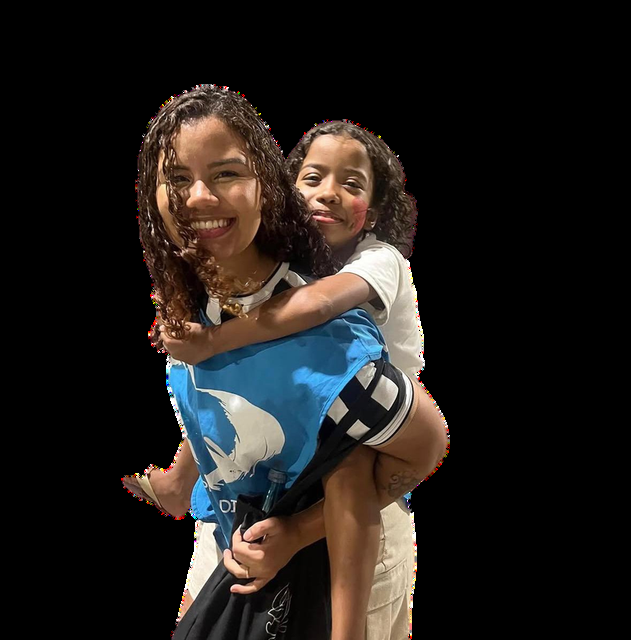
Boas-vindas ao JPD
Neste manual você entende tudo sobre a nossa ONG.
Nossa história, nossa estrutura, os níveis de voluntariado e as normas que organizam o nosso trabalho — tudo em um só lugar. Seja bem-vindo(a) à Associação Civil Jovens Pela Diferença. Em caso de dúvidas, estamos sempre à disposição.
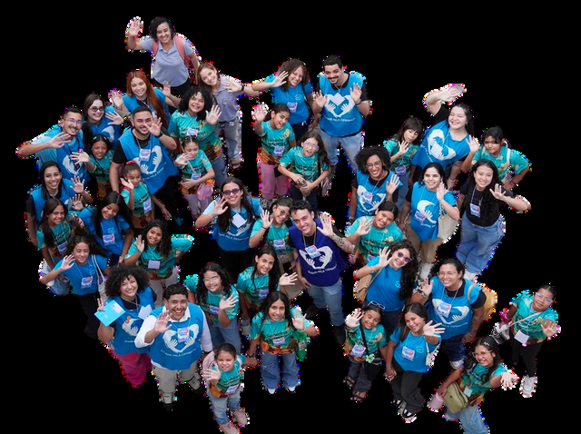
De uma adolescente a uma família
Nossa história
Fundado por uma jovem adolescente que experimentou o voluntariado e quis levar a experiência a amigos e conhecidos.
Primeira ação social, no Lar Santa Gianna — abrigo de crianças.
Novas ações com crianças e início dos jantares solidários na Praça do Ferreira.
Fomos crescendo e nos profissionalizando, criando estruturas e nos consagrando como a maior ONG jovem de Fortaleza.
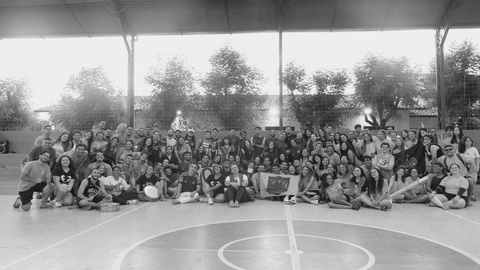
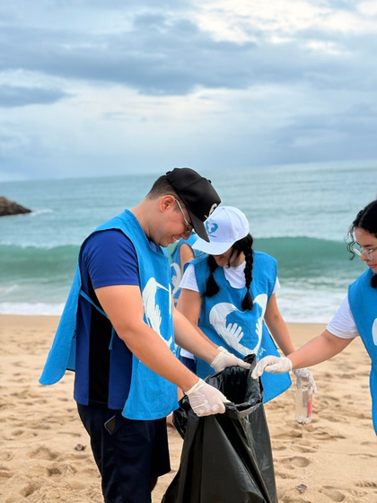
Como funciona o JPD?
5 públicos, um mesmo cuidado
Realizamos ações praticamente todos os fins de semana — você só precisa participar de pelo menos 1 a cada 3 meses.
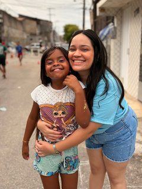
Crianças
Nossa maior prioridade. Ações de recreação, nas quais nos dividimos em 4 equipes.
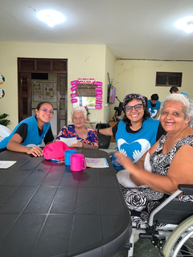
Idosos
Ações de escuta, atividades lúdicas e presença.
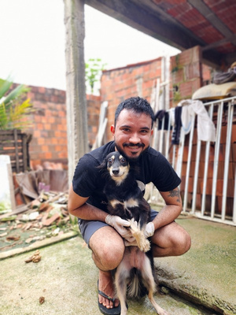
Animais
Mutirões de banho e limpeza.
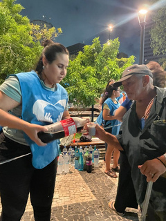
Pessoas em situação de rua
Jantares e cafés solidários.
Socioambientais
Limpezas de praia e ações de conscientização.
Direção
A Associação conta com 3 administradores
Conheça nossos diretores.
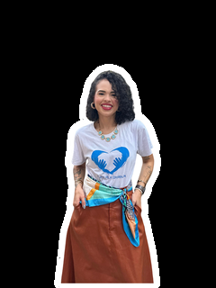
Ester Farias
PresidenteVoluntária há 11 anos, cofundou os Jovens Pela Diferença e é a responsável por toda a estrutura organizacional desde o início. Trabalha na execução e gestão da equipe de Direção.
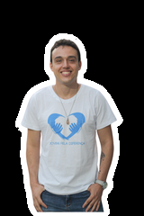
Wagner Lindemberg
Vice-presidenteVoluntário desde os 7 anos. Desde sua entrada tem ajudado nas mais diversas frentes até chegar à Direção, onde é coordenador de área hoje. Engenheiro de Telecomunicações.
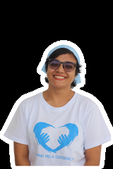
Talinna Menezes
Coord. GeralVoluntária há 5 anos, iniciou na ONG nas ações até subir à equipe de Brincadeiras Livres. Responsável por desenvolver habilidades técnicas e interpessoais de liderança na Direção.
Estrutura
Equipes & setores
As equipes atuam nas ações; os setores cuidam da gestão interna da ONG.
As equipes atuam nas ações, levando atividades específicas de entretenimento para as crianças dos locais que visitamos. Todos os voluntários escolhem sua equipe de atuação no dia da integração.
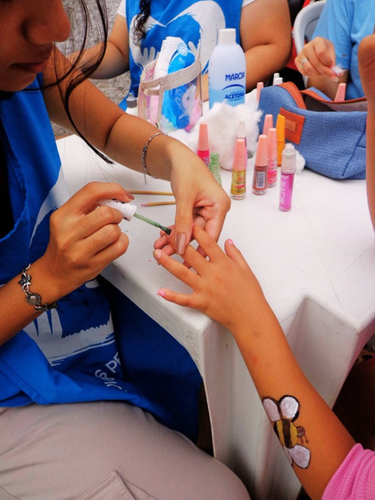
Salão de Beleza
Atividades de beleza e autoestima.
Ana Júlya Pinheiro · Lânia Silva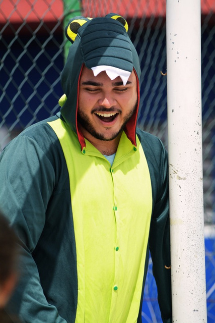
Brincadeiras Livres
Atividades esportivas e de energia.
Manuela Alcântara · Cleiton Xavier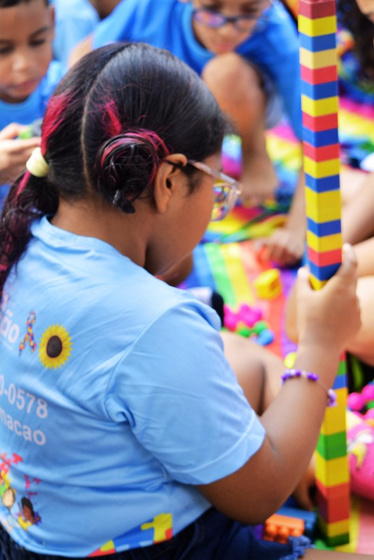
Brinquedoteca
Atividades lúdicas e de aprendizado.
Yago Vieira · Letícia Narayanah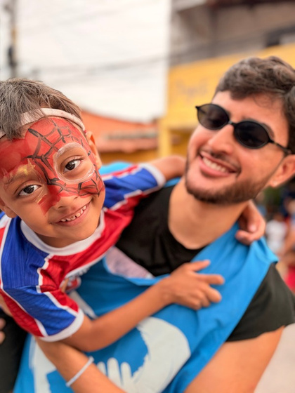
Pintura
Pintura de rosto e corpo.
Gabriela Meneses · Gleice Kele MouraOs setores atuam na gestão interna da ONG. São administrados apenas por voluntários aprovados em Processos Seletivos, abertos semestralmente — fique de olho nos nossos grupos oficiais!
Endomarketing
Engajamento entre membros, cultura organizacional e cuidado com os voluntários.
Gestão de Recursos
Recursos financeiros, captação e vendas da Lojinha.
Comunicação
Marketing e divulgação online das atividades.
Planejamento
Marca, gerencia e divulga as ações; capacita as coordenações.
Sua trajetória no JPD
Como será a jornada a partir daqui?
Integração, níveis de voluntariado e o que esperamos de você.
Sábado presencial, para nos conhecermos e conhecer as equipes; domingo online, para aprofundar os conhecimentos sobre a ONG (se não puder, é preciso avisar a Ester).
4 opções de ações exclusivas para novatos viverem sua primeira ação. Mais informações são sempre passadas no grupo e na própria integração.
Os níveis de voluntariado
Experiência você está aqui
É quando você entra, vive os 3 meses e cumpre dois requisitos. Não cumpriu no prazo? Você pode se inscrever novamente, até 3 vezes.
- Fazer pelo menos 1 dia de integração
- Fazer ações com 2 dos 5 públicos
Efetivo
Voluntariado pleno, com autonomia e responsabilidades compatíveis com a função. Desempenho acompanhado pela Direção.
- 1 ação a cada 2 meses
- Após 6 meses, pode tornar-se Associado
Associado
Assina o Termo de Adesão (Lei nº 9.608/98), integra oficialmente a Assembleia e representa o JPD.
- 7 ações no semestre
- Coordenar ao menos 1 ação
- 6 meses em coordenação, setor ou apadrinhamento
- Sem faltas injustificadas
Frequência
Participar pelo menos 1 ação a cada 3 meses. Ausência de emergência: até 20h da própria data da ação.
Atrasos
Até 15min: ok. Entre 15-25min: 1 atraso. Acima de 25min: falta. 3 atrasos viram 1 falta.
Faltas
Falta sem aviso = 1 falta. 2 faltas = advertência. 3 faltas = desligamento. Zeradas todo ano.
Lanche
Contribua com o lanche levado aos beneficiados em todas as ações.
Ações obrigatórias
Assembleia (fev e ago), Oficina da equipe (1x/semestre) e Workshop (outubro).
O que esperamos de você?
A postura de um voluntário do JPD passa por compromisso, ética e cuidado com quem recebemos e com quem doa junto com a gente.
Comprometimento com as ações em que se inscrever, avisando com antecedência quando não puder ir.
Respeito e cuidado no trato com beneficiados, colegas e coordenações.
Postura ética e alinhada à missão do JPD dentro e fora das ações.
Participação ativa e proatividade nas equipes, setores e ações.
Do outro lado do que pedimos
Benefícios de ser voluntário do JPD
Está o que oferecemos.
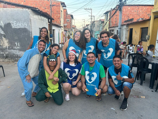
Novas amizades
E o contato com realidades que talvez você ainda não conhecesse.
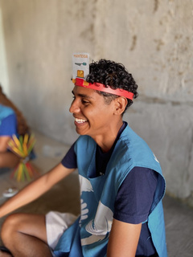
Apadrinhamento
Um voluntário mais experiente acompanha seus 3 primeiros meses.
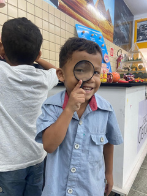
REVO
Reconhecimento mensal de quem mais participou e subiu de patente.
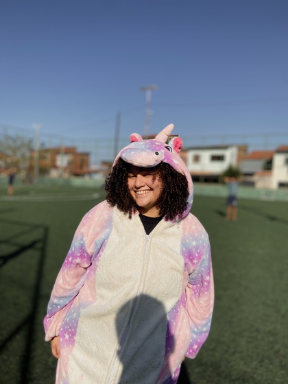
Currículo & desenvolvimento
Reconhecimento mensal de quem mais participou e subiu de patente.
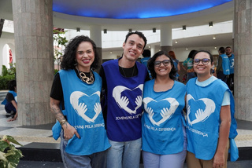
Liderança & mentoria
Oportunidades de liderança e orientação profissional ao se engajar em um setor.
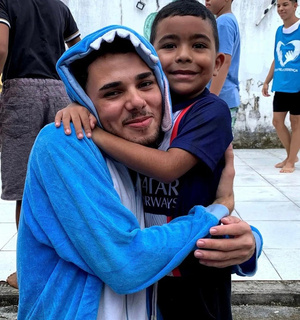
JPD Solidário
Suporte a voluntários em vulnerabilidade: cestas básicas, passagens e ajuda com o lanche.
Faça parte da mudança.
Uma iniciativa de contribuição mensal que ajuda a manter as atividades da nossa ONG funcionando com qualidade, impacto e amor. Todos podem ser Parceiros — é uma forma de apoiar além do voluntariado.
Acesse apoia.se/parceirojpd
Escolha um plano de apoio e clique em "Apoiar".
Faça login ou crie sua conta.
Informe seus dados de pagamento — aceitamos cartão de crédito, pix e boleto bancário!
Ser um apoiador te dá benefícios exclusivos:
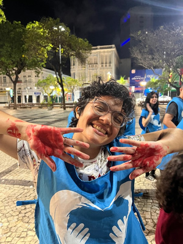
Essencial
Todos os links conectados ao JPD
Você encontra aqui.
O Jovens Pela Diferença é uma instituição laica e sem nenhum tipo de ligação ou preferência por religião. Como instituição, temos parcerias profissionais e respeitosas com projetos que por vezes são ligados a religiões e que contam com nossa ajuda e respeito.
Prepare-se para ser Jovem Pela Diferença!
É garantido: todo o esforço e responsabilidade compensam e valem a pena nas ações — momentos que fazem valer todo o nosso comprometimento. Muito do amor que temos pra dar é direcionado a você, voluntário, cuja trajetória acompanharemos de perto.